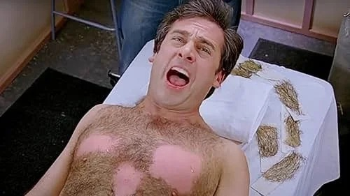

GOOD THINGS COME IN THREES
We’re so fucking back.
It’s the third year of Waxball, our second with a full lineup and I, for one, feel honoured to be a part of it. As the facade of a manager hangs on our walls, we enter season three with the tied highest-scoring NFL opening weekend since 1970. Hopefully it’s a preview of what’s to come.
As always, I’m your unbiased, completely neutral, jumping for joy and counting his chickens Stat Fag Nic Hamilton. Let’s wrap up Week 1 of 2026.
DON’T GET COCKY, DON’T GET COCKY
For only the third time in Waxball history, Nic (Stat Fag; 156.02pts) put up the league’s highest score of the week and the highest Week 1 score out of all three seasons. If you’d told me this would be the case on Thursday night after Drake Maye and AJ Brown combined for 15.42pts against Blue (blueballs; 121.92pts) and his flying JSN (26.20pts), I’d tell you to quit absolutely lying to my face. Alas, some surging results in the fourth quarter of Sunday’s games proved Stat Fag unbeatable, as Blue fell to him for the third time in four matchups.
Stat Fag is now 3-0 in Week 1 matchups but mustn’t get cocky, after only finishing 5th in both previous seasons.
This matchup was the highest-scoring of the week, the second time that’s been the case for Nic v Blue who also hold the record for highest-scoring matchup in Waxball history (181.44-152.54pts; Week 16 2024). Despite holding a losing record to Nic, Blue still ranks #2 all-time in average score and leads Waxball with 14 weekly top-three finishes.
Blue will look to get his first W in next week’s Heated Rivalry against Milo (Nacua Matata; 4th) (Rivalry Score 75/100) as Nic faces last year’s regular-season winner Paul (helloimpaul; 8th), a matchup that holds an even 1-1 record.
BLOWING OUT THE BIG DICK
An historically one-sided matchup stayed that way as Trav (darryluvr3000; 149.90pts) blew out Sam (mistahbigdick; 100.76pts) by a whopping 49.14pts. This still isn’t the largest win in this matchup’s history, as Trav dominated Sam with his highest ever score of 172.90pts, defeating Big Dick by 63.12pts in Week 9 of 2024. Sam’s only win in this 1-4 matchup came in the first week of last year’s Toilet Bowl, as he had to put up his highest-ever score to beat a high-flying Trav 166.12-147.82pts.
This is Trav’s first Week 1 victory in Waxball history and Sam’s first Week 1 defeat.
Trav looks to keep things flowing in Week 2 against Christian (Steeler Virginity; 6th), who put up the week’s highest score in both of his previous wins against Trav. Sam takes on last year’s loser Havi (Papi Coop; 2nd) in a bland rivalry that needs some fireworks.
A HEATED RIVALRY GETS EVEN HOTTER
Before this week’s matchup, Erik (Pamela Mari Ohno Dagoberg) and Christian (Steeler Virginity)’s Rivalry Score sat at 99/100 with an even 2-2 record, after some tight matchups and facing each other in the 2024 Championship. This week proved that the Rivalry Score calculator knows what it’s doing, as the pair fought their tightest matchup yet with Christian defeating Erik (121.96-115.40pts) by 6.56pts, the closest matchup of the week and Week 1’s lowest winning score, bumping their Rivalry Score up to 100/100, tying with Jacob v Jakob and Jakob v Travis for highest in the league. Erik can perhaps feel at ease as, in conspicuous timing, Christian’s Packers fell to his Vikings this week.
Despite the loss, Erik is still #1 all-time in average score and #1 in PF, where Christian is #1 in all-time point differential. Erik travels to Chicago to meet Mosko (poonfullofsugar; 12th) in Week 2 who he holds a 1-3 record against, with Mosko putting up his highest ever score of 170.40pts in their last matchup. Christian finds his friend Trav (darryluvr3000; 3rd) in Denver, a foe he’s defeated twice in three attempts, both by putting up the week’s highest score.
RIDER DOMINANCE
For the third successive time in their three matchups, last year’s champion Milo (Nacua Matata; 139.96pts) defeated 2024 Shit King Mosko (poonfullofsugar; 94.04pts). Including last year, Milo now holds the longest active win streak with 4W, while Mosko has the #2 highest Points Against all-time. Mosko put up the lowest weekly score for the 3rd time in Waxball history to fall to last place after week’s end. He’s now 0-3 in Week 1, which could mean absolutely nothing after his league loss in 2024 and 3rd-place finish in 2025.
Milo stars in the Heated Rivalry in Week 2 against Blue (blueballs; 7th; Rivalry Score 75/100), who he’s also undefeated against including last year’s Championship that ended in a 0.80pts victory for Manheim. Mosko finds Erik (Pamela Mari Ohno Dagoberg; 9th) as both try to pull out their first win of the season.
POON COMEBACK
Sitting 26.70pts behind Paul (helloimpaul; 120.56pts) going into MNF, Will (poon messiah) needed Kenneth Walker to have a day. And boy did he. Walker went for a career-high 191yds and 2tds to secure a 7.40pts victory for Poon.
Paul and Will had met only once before, with Will taking that game too. This doesn’t sound right (trust me I triple-checked), but 2025 regular-season winner Paul is the only manager in all of Waxball that Will has a winning record against. Amazing.
After winning 6 of his first 7 matchups last season, regular-season winner Paul lost both playoff games and ended his year in 4th, the second time that’s happened in two Waxball seasons. Maybe a loss is what he needed.
Compare managers
Will’s first Week 1 victory takes him to a Week 2 matchup with Miles Elliot (Daddy Campbell; 10th), who he’s already played five times in league history with a 2-3 record. Both managers have put up their highest ever score in this matchup. Paul meets Nic (Stat Fag; 1st) in the only instance Paul has ever played a manager who was top of the league at the time. They are 1-1 all-time, with Paul putting up his lowest ever score in his only loss.
LAST YEAR’S DUNCE, THIS YEAR’S CHAMP?
In a dominant Week 1 performance, calendar model Havi (Papi Coop; 154.06pts) beat out Miles Elliot (Daddy Campbell; 115.00pts) for the first time in their history. The trouncing means Miles overtakes Will for the worst all-time point difference in the league (-283.36pts) with an average all-time score of 114.58pts/week. After two disappointing 8th and 10th place finishes, he’ll look to string some consistency together rest of season.
After not once holding a top-three spot at the end of a week in 2025 and subsequently losing the Toilet Bowl, this week’s second-highest scorer Havi will hope to keep his dominance going against Week 1’s second-lowest scorer Sam (mistahbigdick; 11th). Miles and Will (poon messiah; 5th) face off in a storied matchup that will make them the first two managers to have met six times in league history.